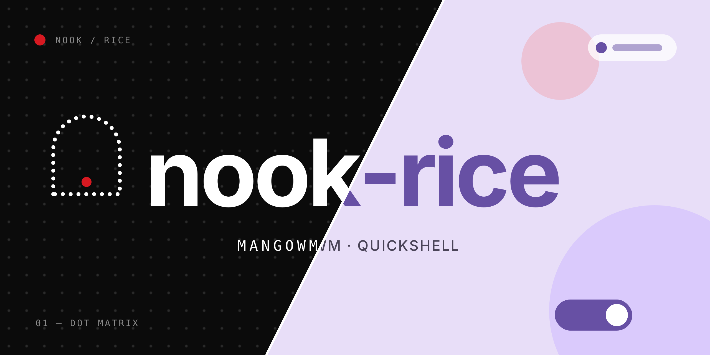
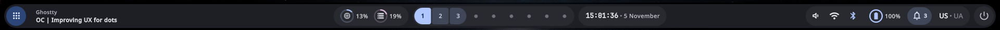
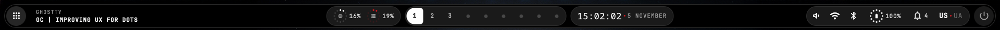
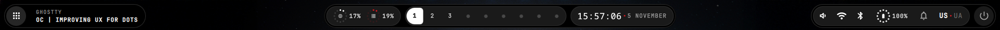
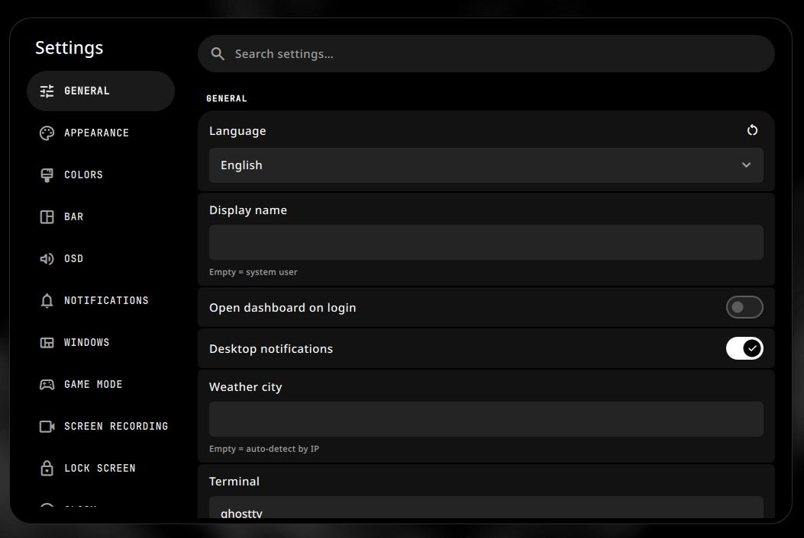
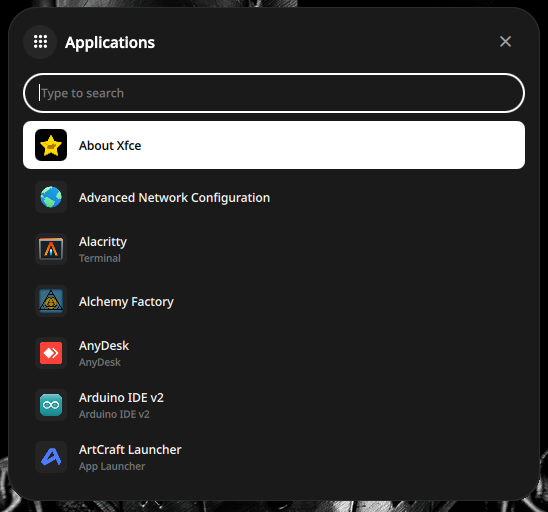
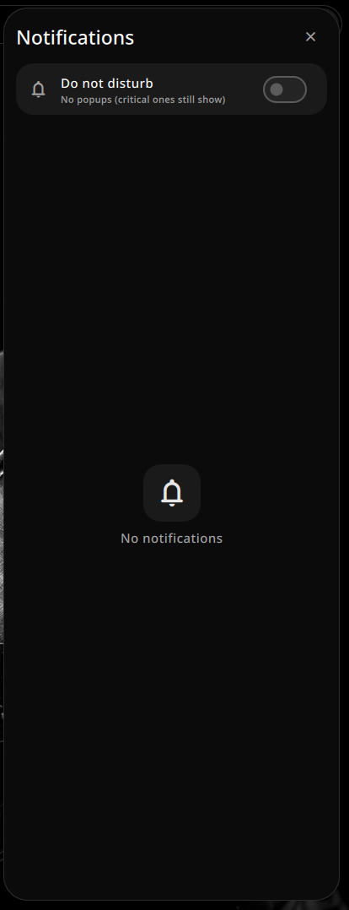

EDOTS.
A Wayland desktop that speaks Material 3 Expressive and Nothing. One shell, three bar styles, a palette pulled from your wallpaper — and no stitching waybar, mako, fuzzel and swaylock together.

Two design languages, one palette
Switch the design in Settings or with edots theme toggleDesign. Both designs
run the same widgets, the same keybinds and the same colour pipeline; only the shapes,
type and accent behaviour change.



What is inside
Everything is one Quickshell process. Surfaces grow out of the bar in morph mode, or open as floating cards in window mode.
Modular bar
Launcher, window, media, resources, workspaces, clock, volume, network, battery, notifications, tray and power. Modules toggle from Settings.
Floating cards
Launcher, wallpapers, clipboard, mixer, audio studio, display centre, Wi-Fi, Bluetooth, media, power, updates, diagnostics and keybinds.
Lock screen
Configurable clock, widgets, wallpaper effects and PAM unlock, plus optional on-device Face ID. Developer hotkeys stay whitelisted and never unlock.
Notification center
Grouping by app, snooze, history limit, urgency accents, inline actions and configurable density. Do Not Disturb from the bar or CLI.
One glance
Overview, media, performance, workspaces and planner tabs, with calendar, weather, timer, todo and brightness cards.
Per-app audio
Every playing app with its own volume, mute and output. Pin an app to a sink and Edots remembers it. EQ, presets and mic processing live in Audio Studio.
StatusNotifier host
Quickshell owns the tray, so nm-applet, Steam, blueman and Viber register directly. Menus are Material 3, with drill-down submenus and app-coloured icons.
Screen tools
Screenshot, region OCR, Google Lens and recording from one overlay. Text goes straight to the clipboard.
Night light & updates
gammastep-backed night light with manual or scheduled temperature, and an update centre for pacman, AUR and Flatpak that never installs on its own.
Small and scriptable
A plugin is a folder with a manifest and a QML file. It can add a surface, a bar module, or both. See Plugins.
edots
Every surface, theme, session action, Face ID step and diagnostic is one command. Raw Quickshell IPC is one command too.
Wallpaper colours
Palette generated from the current wallpaper and synced to GTK, kitty, ghostty, Firefox, rofi and KDE. Dot, fade and scan transitions.
Look closer


